Power Electronics
Switching Mode Power Supplies
An in-depth study of DC-DC converter topologies with a focus on the flyback converter. Progressed from theoretical foundations through PSIM simulation to physical hardware testing, including hand-winding magnetic components in the lab.
Topics Covered
- PWM control principles and duty cycle theory
- Flyback converter operation: energy storage, transformer turns ratio, CCM vs DCM
- Continuous and discontinuous conduction mode analysis
- Output voltage regulation under varying load
- UCC2804 current-mode PWM controller IC
- Transformer core selection and winding techniques
Lab Breakdown
Tools Used
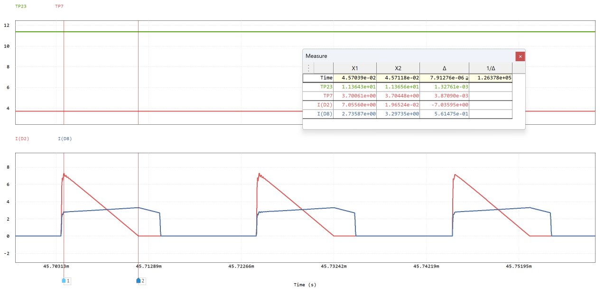
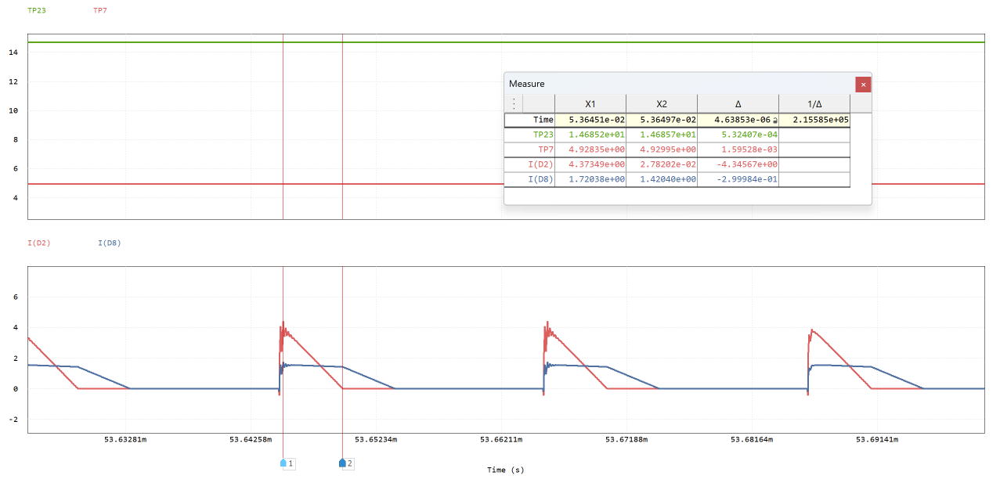
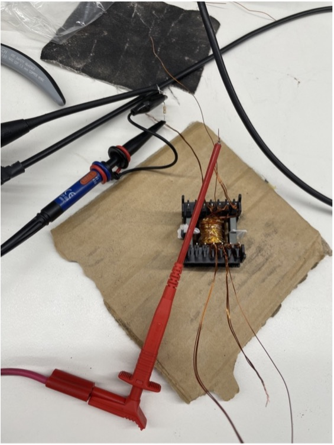
Electrical Conversion
A deep study of controlled AC-DC rectification using thyristors (SCRs) and DC-DC conversion using buck converters. Combined extensive PSIM simulation with hands-on hardware lab work, capturing hundreds of oscilloscope waveforms across varying firing angles, load configurations, and operating conditions.
Topics Covered
- Thyristor (SCR) operation and firing angle control
- Single-phase half-wave and full-wave controlled rectifiers
- Three-phase full-wave controlled rectifiers
- Effect of firing angle (0°–210°) on output voltage
- R, RL, and capacitor output filter load types
- Source impedance and commutation notch effects
- Input harmonic analysis and Total Harmonic Distortion (THD)
- Thyristor latching and holding current behaviour
- Buck converter with R, RL, LC loads at varying duty cycles
- Back-EMF motor load modelling
Lab Breakdown
Tools Used
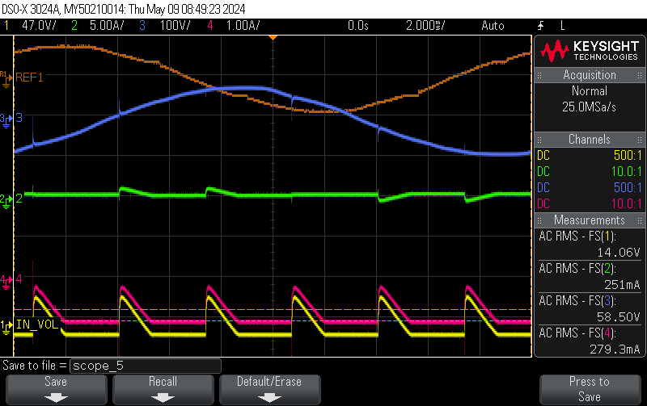
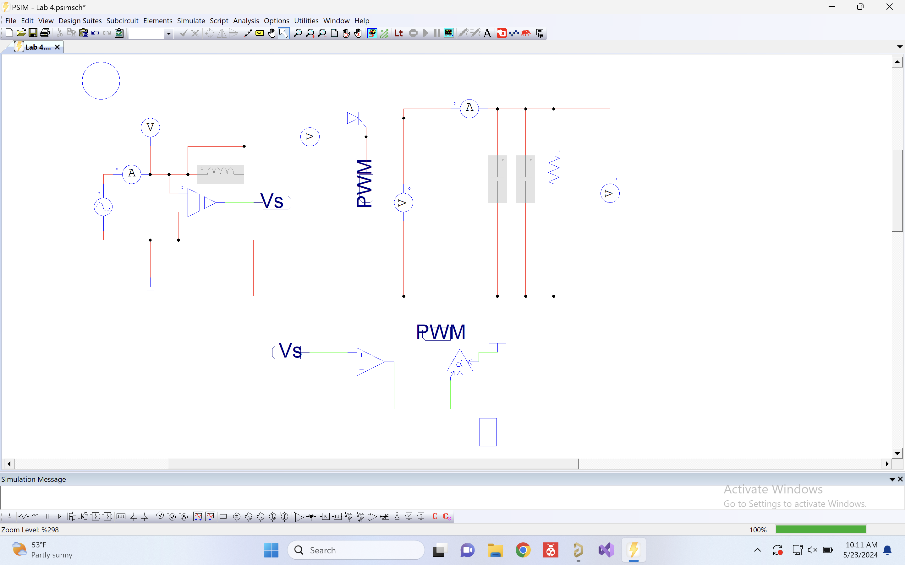
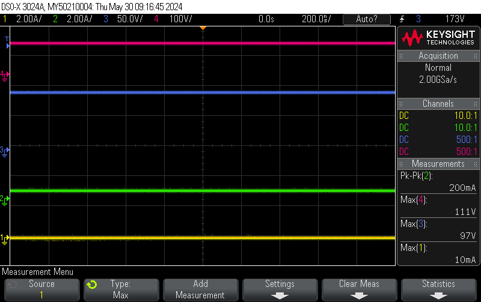
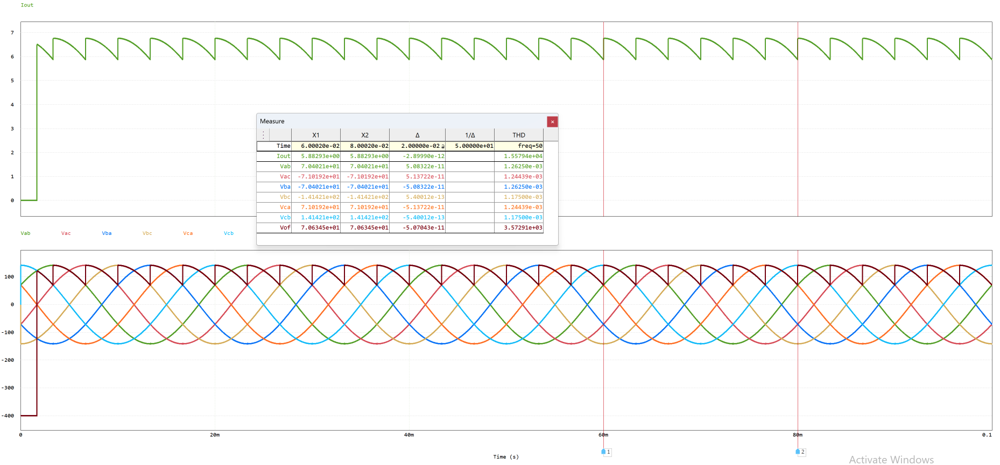
Electrical Plant
Introduction to large-scale electrical plant equipment and power systems, including transformers, motors, and generators. Practical simulation work used MATLAB and Simulink to model and analyse machine behaviour.
Topics Covered
- Power transformer equivalent circuits and efficiency analysis
- Induction motors: equivalent circuit, torque-speed characteristics
- Synchronous generators: phasor analysis, regulation
- Three-phase power system fundamentals
- Per-unit system analysis
Lab Work
Tools Used
Electronics & Circuits
Electronic Circuits 2
Advanced analogue circuit design and analysis covering MOSFET characterisation, current mirror circuits, and differential amplifier design. Lab work combined physical hardware measurements with simulation, and assignments required independent circuit design and analysis.
Topics Covered
- MOSFET output characteristics: Id vs Vds at multiple Vgs bias points
- Saturation and triode region operation
- Current source circuits and current mirror topologies
- Differential amplifier transfer characteristics and common-mode rejection
- Small-signal models and AC analysis
- Amplifier biasing and operating point stability
Lab Breakdown
Tools Used
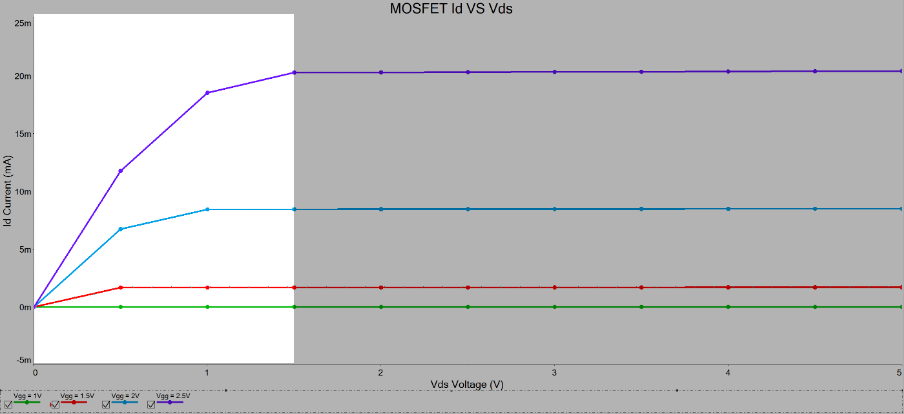


Electronics
Core electronics theory covering active device operation, amplifier circuits, and frequency response. Lab and assignment work used Multisim for circuit simulation and verification of theoretical calculations.
Topics Covered
- BJT and MOSFET fundamentals and biasing
- Small-signal amplifier design and analysis
- Frequency response: Bode plots, -3dB bandwidth
- Feedback amplifiers and stability
- Operational amplifier circuits
Lab & Assignment Work
Tools Used

Signals & Systems
Foundational signal processing theory implemented in MATLAB. Covered time-domain and frequency-domain analysis, culminating in spectrogram generation and FFT-based signal characterisation of real audio signals.
Topics Covered
- Continuous and discrete-time signal representation
- Fourier series and Fourier transform
- Discrete Fourier Transform (DFT) and FFT algorithm
- Convolution and LTI system analysis
- Frequency response and filter design fundamentals
- Spectrogram analysis of time-varying signals
Lab Breakdown
Tools Used
Circuit Simulation
Advanced circuit simulation using NI Multisim. Labs covered amplifier circuit design, DC operating point analysis, AC frequency response, and transient behaviour. An individual assignment required independent circuit analysis with hand calculations verified against simulation.
Topics Covered
- Multisim schematic entry and simulation workflow
- DC operating point and bias point analysis
- AC analysis: frequency response, Bode plots
- Transient simulation and time-domain waveforms
- Common-gate amplifier configuration and analysis
- Hand calculation verification against simulation results
Lab Breakdown
Tools Used


Communication Engineering
Study of digital modulation and demodulation techniques with implementation in MATLAB. Core focus on Quadrature Phase Shift Keying (QPSK): generating modulated signals, analysing their spectral content, and recovering the original baseband data through I/Q demodulation and filtering.
Topics Covered
- Analogue and digital modulation theory: AM, FM, PSK, QAM
- QPSK modulation: I/Q channel mapping and carrier multiplication
- Spectral analysis of modulated signals (time and frequency domain)
- Coherent demodulation: I/Q mixing and low-pass filtering
- Baseband signal recovery and bit error analysis
- MATLAB signal generation, modulation, and FFT analysis
Lab Work
Tools Used


Embedded Systems
Embedded Systems
Advanced embedded systems programming on the STM32F439 ARM Cortex-M4 microcontroller. Focused on bare-metal C programming without abstraction layers — directly configuring hardware registers for the RCC clock tree, GPIO, timers, and UART peripheral. Used the Keil MDK toolchain and CMSIS libraries.
Topics Covered
- ARM Cortex-M4 architecture and instruction set (ISA)
- Development environment: Keil MDK, J-Link debugger
- RCC: clock tree configuration, peripheral clock enable
- GPIO peripheral: mode, output type, speed, pull-up/down registers
- Timer peripherals: basic, general-purpose, PWM generation
- UART communication: configuration, TX/RX, interrupt-driven I/O
- CMSIS library usage for register access
- Bare-metal C project structure: startup, linker scripts, build configuration
Lab Breakdown
Tools Used

Engineering Design
PCB Design & Simulation
A structured PCB design project completed in Altium Designer, covering the full workflow from component selection and datasheets through schematic capture, simulation, PCB layout, and fabrication output generation. The project produced a regulated power supply design using the LM3524 PWM controller IC. Altium was accessed remotely via RMIT's Citrix virtual desktop environment.
Topics Covered
- Component research and datasheet interpretation (LM3524, IRF9540N, 1N4007, UF4004, inductors)
- Schematic capture in Altium Designer
- Pre-layout circuit simulation for design verification
- PCB layout: component placement, routing, design rules
- Gerber and BOM output generation for fabrication
- Design-for-manufacture considerations
- Structured milestone-based design process
Design Milestones
Tools Used
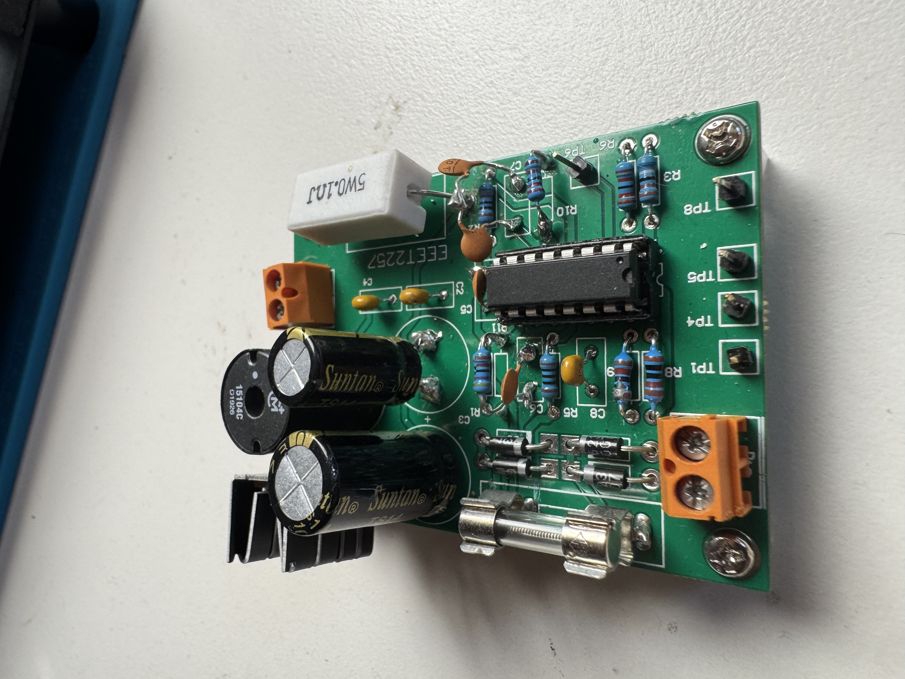
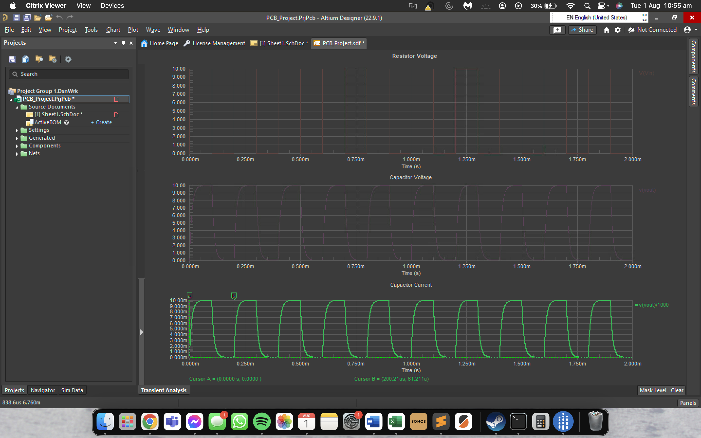
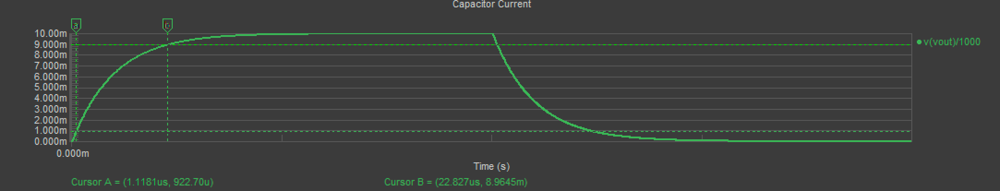
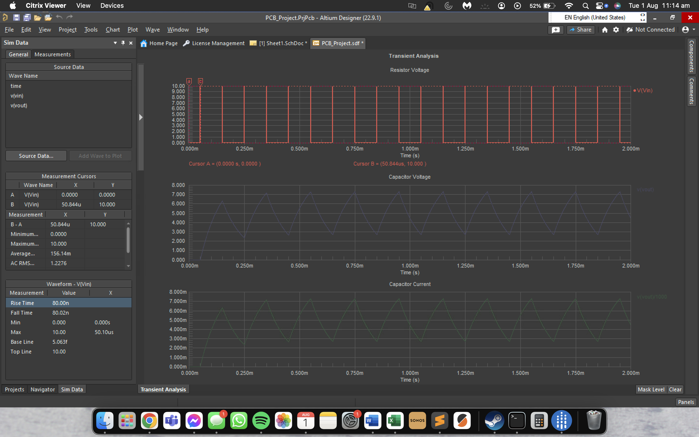
Hybrid Power System Design
A capstone-style group design project (Team 14) requiring the design and simulation of a hybrid power generation system integrating a generator, battery storage, and an AI-based load forecasting module. The project covered system architecture, subsystem design, simulation modelling, and a formal pitch presentation.
Project Scope
- Hybrid power system: generator + battery with intelligent mode switching
- Power Source Control subsystem: manages generator output and battery charge state
- Dynamic Load subsystem: models realistic variable load profiles
- Mode Controller: determines operating mode (generator, battery, hybrid) based on SoC and demand
- Fuel consumption and battery State-of-Charge (SoC) modelling
AI / Neural Network Integration
- Neural network trained on historical load data profiles for predictive load scheduling
- Load Forecasting Module integrated into system simulation
- Compared pre- and post-AI integration simulation results for power output and fuel consumption
Deliverables
Tools Used


High Voltage Engineering
High Voltage Engineering
Study of high voltage systems, electrical insulation, and power system protection. Covered the theory behind HV generation, dielectric breakdown, and the protection relays and circuit breakers used in industrial and grid-scale electrical plant.
Topics Covered
- Generation of high voltages: transformer-based and multiplier circuits
- Electrical insulation theory and dielectric breakdown mechanisms
- Electrostatic field analysis
- Overcurrent protection: relay coordination, time-current curves
- Differential protection schemes for transformers and machines
- Circuit breaker operation and interrupting capacity
- Protection system design and data analysis
Lab Work
Tools Used